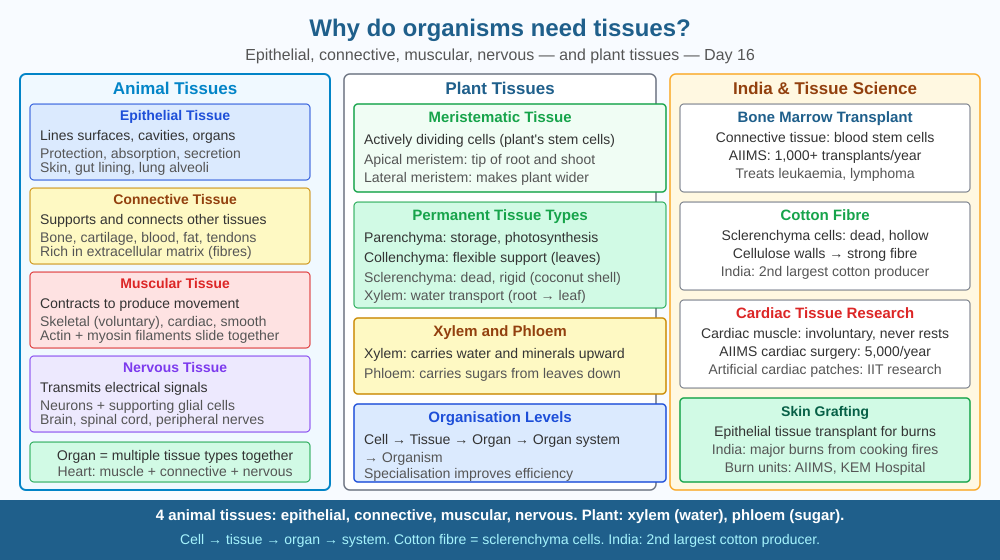

By the end of this lesson, you should be able to explain what a tissue is, describe the main tissue types, and predict what would happen if all cells in an organism were unspecialised.
A single-celled amoeba does everything: moves, eats, digests, reproduces. Yet it cannot think, cannot run 100 m in 9.58 seconds, cannot pump blood 100,000 times a day. Why did evolution produce multicellular organisms with specialised cells? What does specialisation gain us?
Tissue: A group of similar cells performing a specific function. Organisation hierarchy: cells → tissues → organs → organ systems → organism.
Animal tissue types:
Epithelial tissue: Covers body surfaces, lines organs. Properties: closely packed, little extracellular matrix, rapid regeneration. - Simple squamous: lung alveoli (gas exchange — thin for diffusion) - Simple cuboidal: kidney tubules (secretion/absorption) - Stratified squamous: skin (protection, keratin-filled)
Connective tissue: Supports, binds, stores. Properties: cells separated by extracellular matrix. - Bone: collagen + calcium phosphate → rigid support - Cartilage: collagen + chondroitin → flexible, smooth joints - Blood: cells in plasma → transport - Adipose: fat storage, insulation
Muscular tissue: Contracts to produce movement. - Skeletal (striated, voluntary): movement - Cardiac (striated, involuntary, intercalated discs): heart pumping - Smooth (non-striated, involuntary): gut, blood vessels, uterus
Nervous tissue: Electrical signalling. Neurons + supporting glial cells.
Plant tissue types: Meristematic (actively dividing), permanent (specialised: dermal, vascular — xylem/phloem, ground).
Think of tissue specialisation as a factory assembly line versus a one-person workshop:
The gain is enormous: a human heart beats 100,000 times per day for 80 years — a feat no generalised cell could sustain.
The SVG shows a vertical hierarchy diagram with four horizontal bands, each representing a tissue type.
The top band, coloured pale yellow, shows epithelial tissue — closely packed rectangular cells forming a continuous sheet with no gaps between them; a label points to the thin basement membrane below the sheet.
The second band, coloured light brown, shows connective tissue with cells widely spaced in an irregular matrix; sub-labels identify bone (with regular columns of cells), blood (round cells in fluid), and adipose (large cells with fat droplets filling most of the cell interior).
The third band, coloured pink, shows muscular tissue with three subtypes side by side: skeletal muscle fibres with visible striations, cardiac fibres with branching intercalated disc connections, and smooth spindle-shaped cells with no striations.
The fourth band, coloured light purple, shows nervous tissue — a single large neuron with a branching dendrite tree on the left, a long axon extending right, and a cluster of smaller glial cells surrounding the axon like insulation.

India has six major tissue banks — in Mumbai, Chennai, and Delhi — providing bone, skin, corneal tissue, and heart valves for transplant. Skin grafting for burn victims uses epithelial tissue culture: sheets of epithelial cells grown from a small biopsy are expanded in the lab and transplanted over the wound. India records approximately 7 million burn injuries per year, making this technology directly relevant to emergency medicine across the country.
AIIMS Delhi's cardiac surgery department uses donated cardiac tissue for heart valve transplants. Understanding that cardiac muscle is involuntary, striated, and contains intercalated discs explains why heart valves must be preserved carefully — even a few hours without proper storage destroys the collagen scaffold that gives the valve its mechanical properties. Tissue engineering — growing replacement organs on biodegradable scaffolds — is a growing ₹500 crore industry in India, led by institutions like inStem in Bengaluru.
Press your fingertip on paper — it leaves an oily print. Press your cheek skin gently. Compare its texture to the inside of your lower lip.
The differences you feel come from different epithelial tissues: skin has keratin (making it waterproof and tough), while inner cheek epithelium is moist and relatively soft because it is exposed to saliva, not air.
Now touch the back of your hand where a tendon runs toward your fingers — that cord-like structure is connective tissue (collagen bundles). Place two fingers on your chest and feel your heartbeat — that regular thump is cardiac muscle tissue contracting. In under 30 seconds you have touched four tissue types without a microscope.
Stem cells are undifferentiated cells that can become any tissue type. Embryonic stem cells are totipotent — they can become any cell in the body. Adult stem cells (for example, bone marrow stem cells) are multipotent — they can become specific types such as red blood cells, white blood cells, or platelets, but not muscle or nerve.
Induced pluripotent stem cells (iPSCs), developed by Shinya Yamanaka and awarded the Nobel Prize in 2012, are adult cells reprogrammed to a stem-cell state by switching on four specific genes. This means a skin cell can theoretically be converted into a heart muscle cell. India's ICMR guidelines (2017) regulate stem cell research and clinical use. Research institutions like NCBS in Bengaluru work on tissue engineering — growing replacement organs outside the body on scaffolds made from decellularised pig hearts.
Predict: If a patient's own skin cells were converted to iPSCs and then guided to become cardiac muscle cells, why would this approach reduce the risk of rejection compared with a heart transplant from a donor? What property of tissues makes donor transplants immunologically risky in the first place?
What is the main advantage of organising cells into tissues in a multicellular organism?
Correct answer: B
Why is understanding how tissues enable specialisation more valuable than just knowing they exist?
Correct answer: A
If all cells in an organism were identical and unspecialised, what would you predict?
Correct answer: C
A biomedical engineer wants to grow a replacement trachea (windpipe) in the lab. The trachea requires three tissue types: a smooth inner epithelial lining for mucus secretion and protection, cartilage rings for structural support so it does not collapse during breathing, and smooth muscle for adjusting airway diameter.
Design a step-by-step plan for growing this trachea on a scaffold. Specify what tissue type each layer should consist of, what property of that tissue makes it suitable for its role, and what would happen clinically if any one layer were missing or replaced with the wrong tissue type.
Blood is classified as a connective tissue — not because it connects anything solid, but because its cells are separated by a large volume of extracellular matrix (plasma). This makes blood structurally identical in principle to bone or cartilage, just with a liquid matrix instead of a rigid or flexible one. The same embryonic cell type (mesoderm) gives rise to blood, bone, cartilage, and adipose tissue. This common origin explains why certain bone cancers can produce excess blood cells, and why bone marrow — deep inside bone — is the factory for all blood cells throughout life.
Tissues exist because specialisation allows cells to perform one function extremely well — and the total performance of all specialised tissues working together far exceeds anything a single generalised cell could achieve.